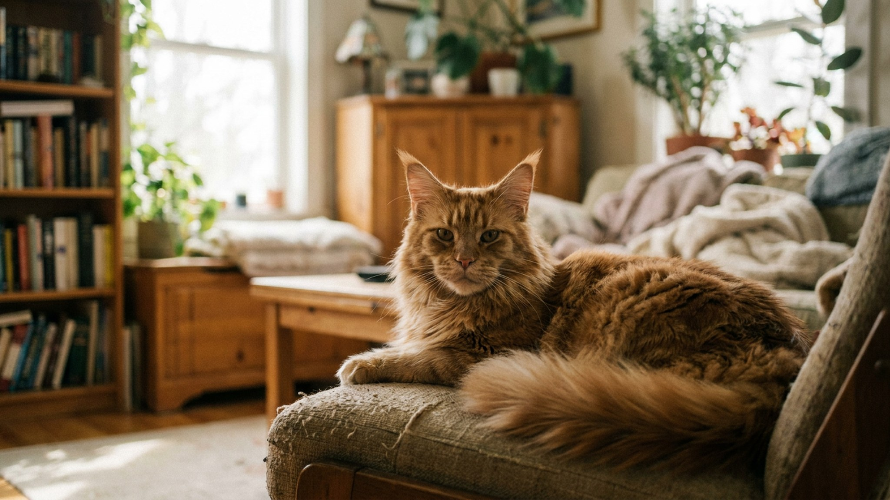

Мейн-кун: реальный размер, сколько растёт и что менять в уходе

13 июня 2026 · 8 минут чтения · Породы кошек
Мейн-кун вырастает до размера небольшой рыси — и делает это медленнее, чем любая другая домашняя кошка. Котёнок, который в полгода уже выглядит взрослым, на самом деле ещё три-четыре года будет набирать массу и объём. Это меняет всё: кормление, нагрузку на суставы, нормы ухода за шерстью. Разбираем реальные цифры и то, что действительно важно знать владельцу мейн-куна.
🐾 Всё о вашем питомце — в одном приложении
AI-ветеринар, дневник, напоминания о прививках и уходе. Установите AnimaLife — это бесплатно, в Telegram и MAX.
Открыть в Telegram → Открыть в MAX →
Сколько реально весит взрослый мейн-кун
Мейн-кун — официально самая крупная из признанных пород домашних кошек. Реальные цифры по весу взрослой особи:
- Коты: 6–10 кг, крупные линии — до 12 кг. Всё, что выше 12 при нормальном телосложении, — это уже избыточный вес, а не «порода».
- Кошки: 4–7 кг. Самки мейн-куна заметно меньше самцов — разрыв в 30–40% нормален для породы.
- Длина тела (без хвоста): 80–110 см. Хвост добавляет ещё 35–40 см.
- Высота в холке: 30–40 см — примерно как средняя собака.
Цифры «17 кг и рекорд Гиннесса» — это ожирение, а не стандарт. Крупный, но поджарый мейн-кун живёт дольше и подвижнее тучного.
До какого возраста растёт мейн-кун
Мейн-кун — рекордсмен по продолжительности роста среди домашних кошек. Если обычная кошка заканчивает рост к 12–18 месяцам, то мейн-кун:
- Скелет и основной объём: 2–3 года.
- Полная мышечная масса и «грива»: 3–5 лет.
- Шерстяной воротник у котов формируется в полном объёме к 4–5 годам.
Практический вывод: котёнка мейн-куна до 2 лет кормят по нормам роста, а не по нормам взрослой кошки. Это означает другой корм, другую калорийность и другую частоту приёмов пищи — обсудите с ветеринаром переход на взрослое питание.
Кормление мейн-куна: главные особенности
Крупная порода — крупные потребности, но не бесконечные. Мейн-кун склонен к набору лишнего веса при свободном доступе к корму.
- Норма для взрослого кота 8 кг: около 300–350 ккал в день при умеренной активности. Точную норму уточняйте на упаковке корма и у ветеринара — она зависит от конкретного корма и образа жизни кота.
- Крупные породы — крупная гранула: корм с маркировкой «для крупных пород» или «Maine Coon» имеет более крупные гранулы, которые заставляют кота жевать медленнее и снижают риск переедания.
- Гидратация критична: мейн-куны предрасположены к заболеваниям мочевыводящих путей, поэтому влажный корм или питьевой фонтанчик — не опция, а рекомендация.
- Суставы: при весе 8–10 кг нагрузка на суставы значительная. Корма с хондроитином и глюкозамином в составе оправданы — уточните состав у ветеринара.
- Кормление по расписанию: 2 раза в день для взрослого, 3–4 раза для котёнка до года.
Уход за шерстью мейн-куна: реальные трудозатраты
Шерсть мейн-куна — главная «работа» владельца. Порода имеет полуплотный подшёрсток и жёсткую ость. Зимой и в период линьки это становится ежедневной задачей.
- Расчёсывание: минимум 2–3 раза в неделю вне линьки, ежедневно в период весенней и осенней линьки.
- Инструмент: металлическая расчёска с широкими зубьями + фурминатор или щётка-пуходёрка. Начинайте с живота и подмышек — там чаще всего образуются колтуны.
- Колтуны у мейн-куна появляются в паховых зонах, за ушами и на животе. Не тяните — аккуратно разбирайте пальцами с корня, или обращайтесь к грумеру.
- Мытьё: раз в 1–2 месяца. Мейн-куны переносят купание лучше большинства кошек, если приучить с детства. Используйте шампунь для полудлинношёрстных пород.
- Уши: проверять раз в неделю — длинная шерсть вокруг ушей задерживает влагу.
Мейн-кун и квартира: что учесть по пространству
Мейн-кун — активная порода, несмотря на спокойный темперамент. Котёнок до 2 лет — это в полном смысле энергичный подросток.
- Высота когтеточки и дерева: стандартные низкие когтеточки мейн-куну не подходят — ему нужна высота минимум 90–100 см, чтобы вытянуться в полный рост.
- Лоток: большой, закрытый лоток 60×50 см или больше. Стандартные лотки для мейн-куна малы — кот будет промахиваться.
- Лежанки и гамаки: выдерживайте нагрузку до 10–12 кг. Проверяйте крепления у подвесных гамаков.
- Игры: мейн-куны — «собачьи» кошки, они любят приносить игрушки и учатся командам. Минимум 20–30 минут активной игры в день снимает накопленную энергию.
Здоровье мейн-куна: на что обращать внимание
Мейн-кун — в целом крепкая порода, но у неё есть наследственная особенность. Гипертрофическая кардиомиопатия (ГКМ) встречается у этой породы чаще, чем у других. Это не означает, что ваш кот обязательно заболеет, — но означает, что плановое ЭхоКГ раз в год начиная с 2–3 лет — это норма, а не перестраховка. Узнайте у заводчика, проверены ли родители на ГКМ.
- Вес: взвешивайте мейн-куна раз в месяц. Быстрый набор или потеря веса — повод к ветеринару.
- Суставы: к 7–8 годам у крупных котов повышается риск артрита. Следите за тем, как кот запрыгивает и спрыгивает с высоты.
- Зубы: чистить зубы или предлагать специальные жевательные лакомства регулярно — крупные породы склонны к накоплению зубного камня.
- Плановые осмотры: раз в год до 7 лет, раз в полгода после.
Мейн-кун и дети: плюс этой породы
Мейн-кун — одна из самых терпеливых и социальных пород. Кот легко уживается с детьми, собаками и другими кошками. Это не случайность — порода исторически развивалась в семейном окружении ферм Новой Англии.
- Мейн-куны редко кусают и царапают в ответ на неловкое обращение — чаще уходят.
- Порода голосистая: мейн-куны трелят, курлыкают и «разговаривают». Это нормально и характерно именно для них.
- Привязываются к конкретному человеку, но не навязчивы — следят за хозяином, но не требуют постоянного внимания.
Что важно знать перед покупкой мейн-куна
Мейн-кун — это 15 лет ответственности за очень большого кота. Несколько вещей, которые стоит понять заранее:
- Шерсть везде: это неизбежно. Регулярный груминг снижает, но не устраняет.
- Расходы на корм: кот весом 8–10 кг ест примерно вдвое больше обычной кошки.
- Кардиопроверка у заводчика: просите документы о тестировании родительской пары на ГКМ — добросовестные заводчики это делают.
- Рост 3–5 лет: не торопитесь переводить котёнка на взрослый корм раньше времени — обсудите сроки перехода с ветеринаром.
🐾 Спросите AI-ветеринара прямо сейчас
AnimaLife — приложение, где AI-ветеринар отвечает на вопросы о кошке или собаке 24/7. Бесплатно, без записи и очередей.
Открыть в Telegram → Открыть в MAX →
🐾 Понравился разбор?
Подпишитесь на канал — каждый день разбираем по одному тревожному симптому у кошек и собак: что в пределах нормы, а когда пора к врачу. Подпишитесь, чтобы не пропустить разбор, который может спасти здоровье вашего питомца.
Материал носит информационный характер и не заменяет очную консультацию ветеринара.
← Все статьи · Открыть AnimaLife в Telegram · RSS